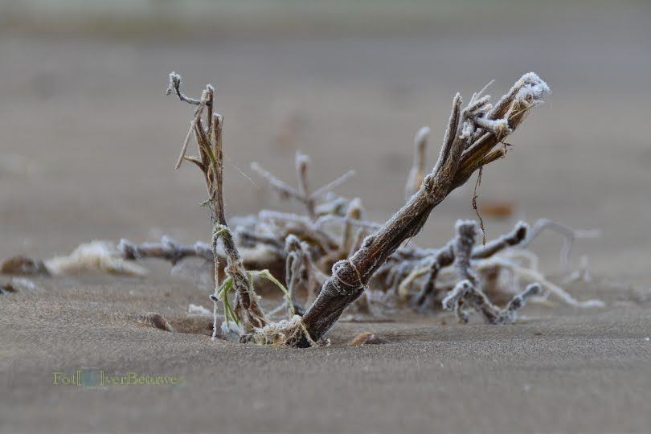
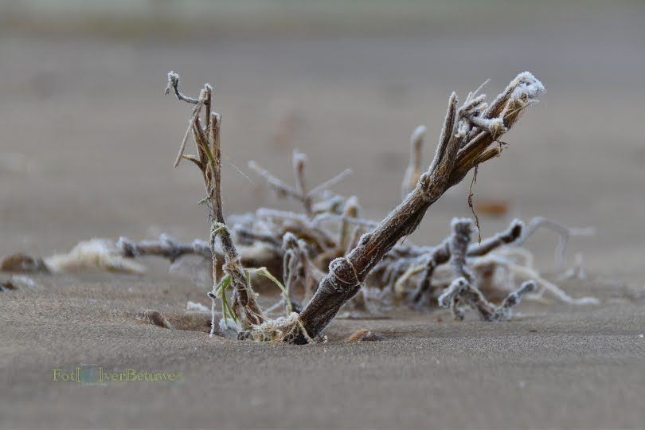

Macro fotografie
 


Over macro fotografie
De lens (18-200mm) op mijn Nikon D5500 is een alleskunner. Er zit een beperkte Macro functie in. Die gebruik ik om bloemen, insecten of paddestoelen vast te leggen. Meestal als de zon nog laag aan de hemel staat, omdat je dan zachter licht hebt. Als je de foto in een bepaalde hoek ten opzichte van de zon neemt, geeft het meestal meer sfeer in de foto. Dit soort foto's neem je vaak laag bij de grond. Daarom draag ik altijd oude kleren met fotograferen. Zeker als het nat of vochtig weer is, zie ik er niet uit. Grappig hoe mensen dan naar je kijken als ze op een zondagmorgen een wandeling maken. Zolang het maar een mooie foto oplevert ben ik tevreden.
- Compositie
- Kleur
- Focus
- Storende objecten
- Achtergrond/lichtval
Richtlijn camera instellingen.
| Camera opties | Omstandigheden | Instelling Landschap | Instelling Macro |
|---|---|---|---|
| ISO intelling | Zonnige dag | Zo 'laag' mogelijk, bijvoorbeeld 100 ISO. | Je hebt met Macro altijd een 'hogere' ISO nodig.Bijvoorbeeld 250 ISO. |
| Zwaar bewolkt | Vrij 'hoog', ongeveer 800 ISO | Minimaal 800 ISO, over het algemeen staat je diafragma open("6). | |
| Diafragma | Zonnige dag | Diafragma mag wat geknepen worden, zeg "13 of "14 | Hier mag het diafragma zo 'open' mogelijk. Dat kan "4 zijn. |
| Zwaar bewolkt | Hier mag het diafragma wat opener om wat meer licht in te laten. Voorbeeld "7 of "8. | Ook dan mag het diafragma open, zeg "4. | |
| Sluitertijd | Zonnige dag | Sluitertijd 1/500, hoe meer het diafragma is geknepen, hoe 'lager' de sluitertijd. Bijvoorbeeld 1/250. | De sluitertijd mag wat sneller, voor meer kleur in je foto. Voorbeeld 1/750. |
| Zwaar bewolkt | Sluitertijd laag, zeg 1/150. Bij een lager sluitertijd een statief gebruiken. | Probeer het minimaal op 1/200 te houden. Anders je ISO omhoog of een statief gebruiken. |